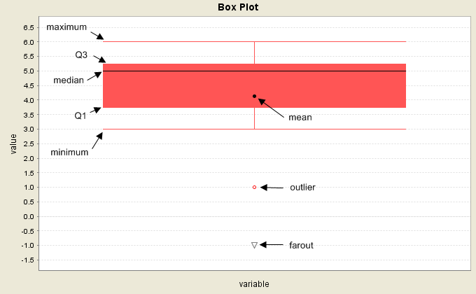

A box plot shows the five-number summaries of a group of data values (minimum, first quartile, median, third quartile, and maximum). The outliers and farout values are shown outside of the box. Outliers are values that are of distances more than 1.5 * IQR (inter-quartile range) but less than or equal to 2 * IQR from the first quartile or the third quartile. Farouts are values that are of distances more than 2 * IQR from the first quartile or the third quartile.

To view the five-number summaries on the box plot generated by Statcato, hover the mouse over the box and the summaries will be displayed as a tooltip.
The box plot graph utility allows the user to specify graph variables containing data values and optionally a group variable. It also provides the options of providing a plot title and showing the legend.